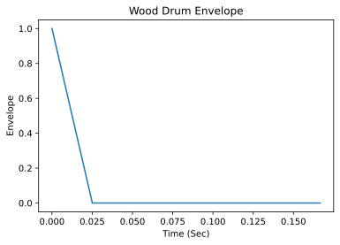
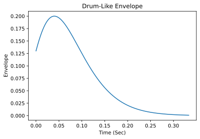

Week 4: Anonymous Functions And Envelopes
Chris Tralie
In these exercises, we'll be doing various warmup activities to help with Homework 2.
Part 1: Anonymous Functions
Fill in the code below to use anonymous functions to make part of happy birthday with pure tones, then again with square waves
Part 2: Envelopes
As we saw in module 6, the equation for an FM frequency waveform can be written as\[ y(t) = A \cos( 2 \pi f_c t + I \sin(2 \pi f_m t)) \]
where- fc: The center frequency or "carrier frequency" of vibrato
- fm: The modulation frequency, or how quickly we're going back and forth around the center
- I: Modulation index: the ratio of the modulation deviation to fm, which can also be thought of as the amplitude of the inner sine wave
- A: The overall amplitude of the waveform
But we can actually make A and I functions of time, so that the time-varying inner and outer amplitude waveform can be written as
\[ y(t) = A(t) \cos( 2 \pi f_c t + I(t) \sin(2 \pi f_m t)) \]
As Chowning shows in his paper, choosing the right functions for A(t) and I(t) is crucial for creating different instrument sounds. In this module, you will warm up for assignment 2 by designing several such functions, referred to as "envelopes" in this context. Your job will be to look at the plots and to see if you can replicate them in numpy code, sampled at 44100hz. Remember, linspace is your friend!
Part 2a: Wood Drum Envelope
The following envelope leads to a wood drum sound when applied both to A(t) and I(t)

Part 2b: Brass Envelope
The following envelope leads to a brass-like sound when applied both to A(t) and I(t)

Part 2c: Drum-Like Envelope
Chowning describes a "drum-like" sound when the following envelope is applied to both A(t) and I(t)

Part 2d: Applying to FM Synthesis
For those who finish early, try to apply some of these envelopes to the FM synthesis equation to create sounds